Tecnologías, lenguajes y herramientas que conozco
-
R
Lenguaje para computación estadística
-
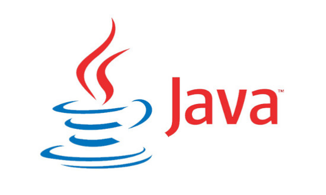
Java
Lenguaje de programación
-
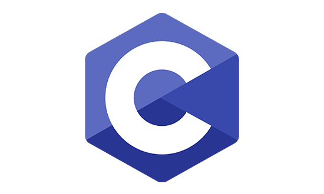
C
Lenguaje de programación
-
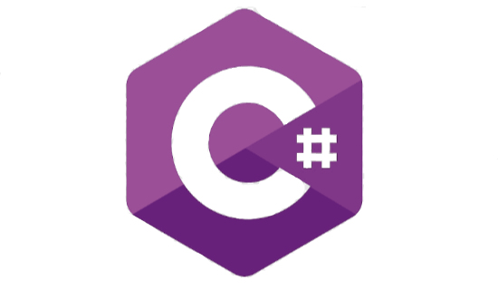
C Sharp
Lenguaje de programación
-
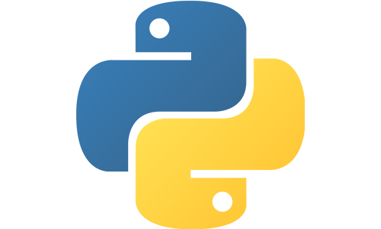
Python
Lenguaje de programación
-
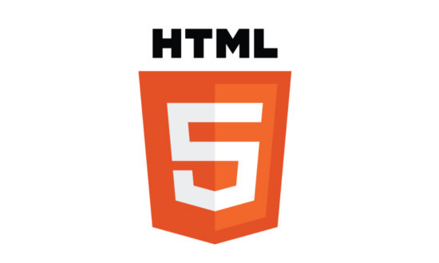
HTML5
Lenguaje de marcado
-
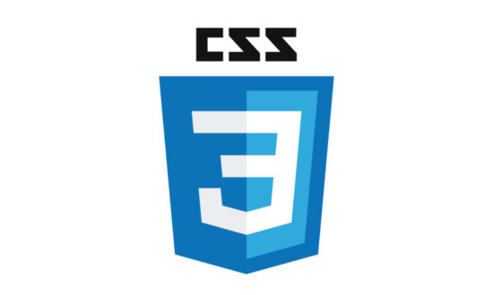
CSS3
Lenguaje de maquetación
-
Bootstrap
Framework CSS
-
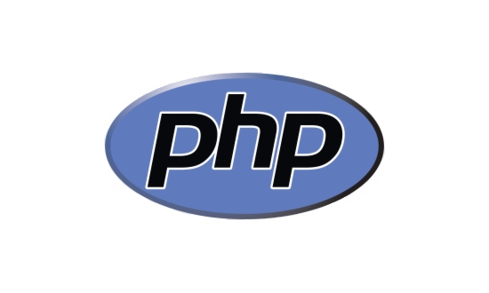
PHP
Lenguaje de maquetación
-
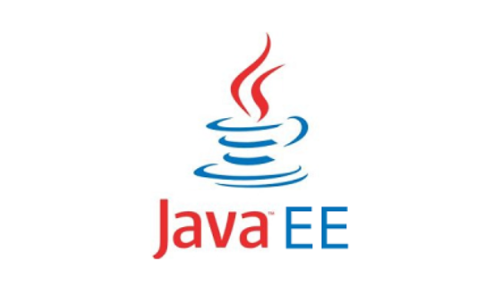
Java EE
Plataforma de programación
-
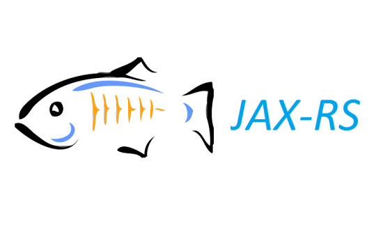
JAX-RS
Soporte para el desarrollo de servicios RESTful
-
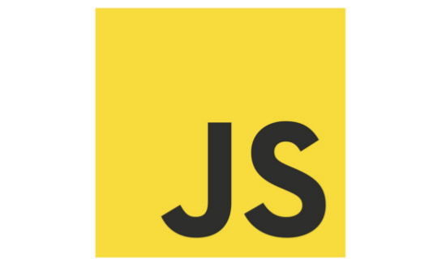
JavaScript
Lenguaje de programación
-
TypeScript
Lenguaje de programación
-
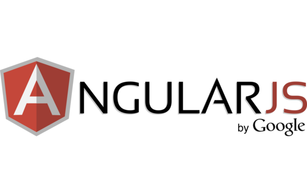
AngularJS
Framework frontend
-
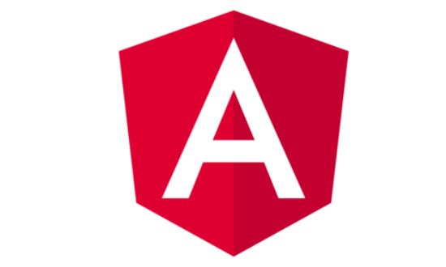
Angular 12
Framework frontend
-
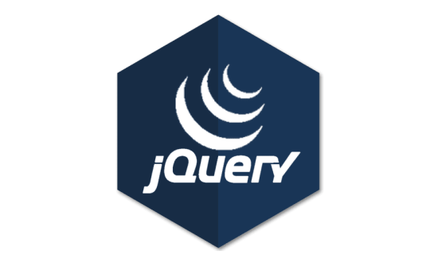
JQuery
Librería multiplataforma de JavaScript
-
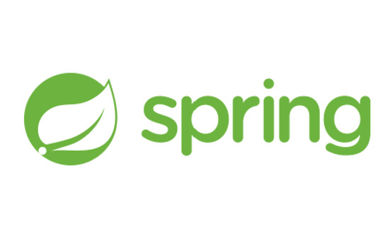
Spring
Framework para aplicaciones web
-
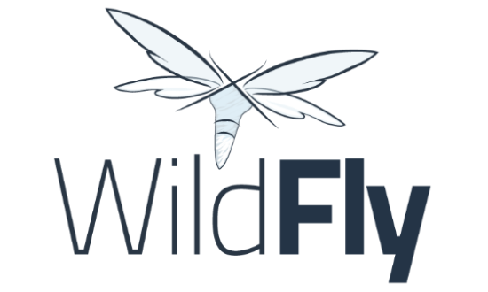
Wildfly
Servidor de aplicaciones Java EE
-
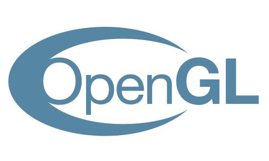
OpenGL
Biblioteca gráfica
-
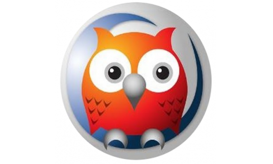
Prolog
Lenguaje de programación lógico
-
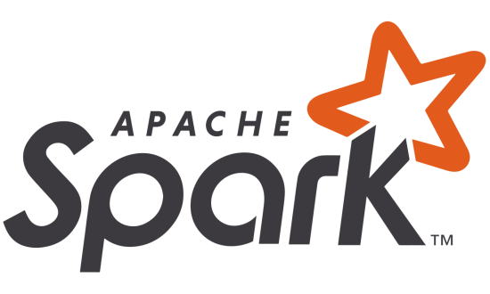
Apache Spark
Motor de procesamiento distribuido
-
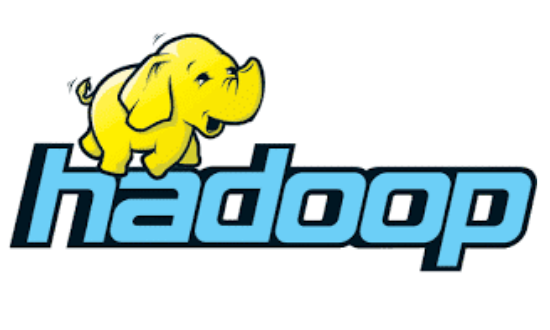
Apache Hadoop
Motor de procesamiento distribuido
-
MPI
Interfaz para aplicaciones paralelas
-
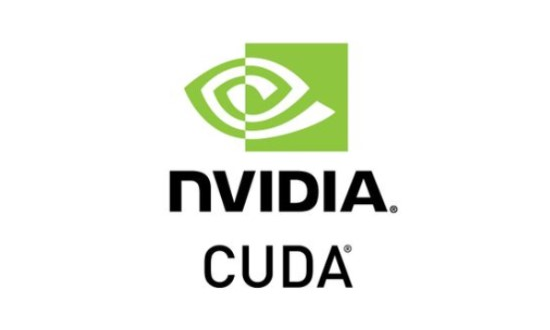
CUDA
Plataforma de computación en paralelo
-
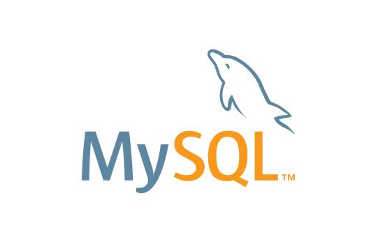
MySQL
Sistema de gestión de bases de datos relacionales
-
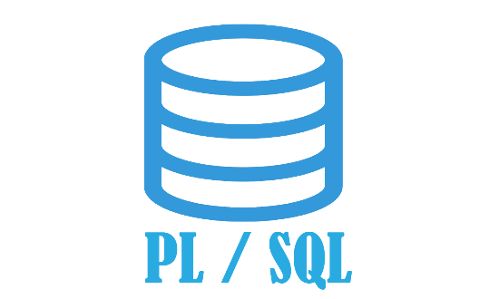
PL/SQL
Lenguaje de procesamiento procedimental
-
SQLite
Sistema de gestión de bases de datos relacionales
-
H2
Sistema de gestión de bases de datos relacionales
-
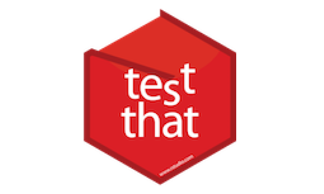
Testthat
Framework de test unitarios en R
-
NUnit
Framework de test unitarios en C#
-
JUnit
Framework de test unitarios en Java
-
EasyMock
Framework de test en Java
-
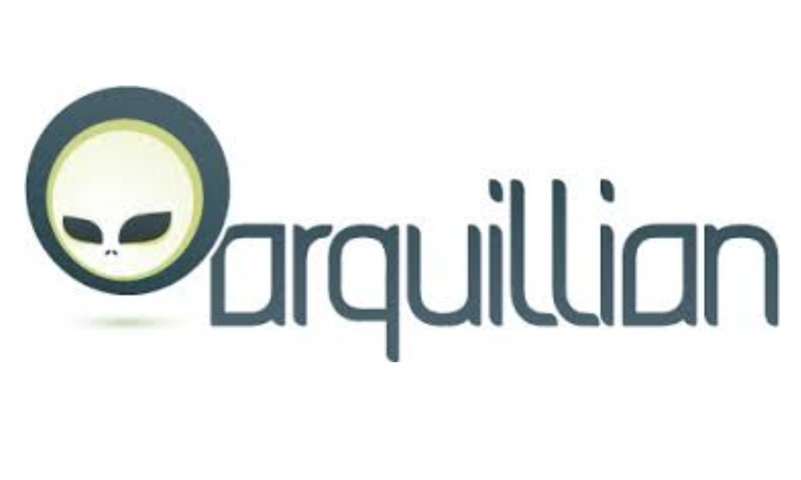
Arquillian
Framework de test de integración en Java
-
Selenium
Framework de test en aplicaciones web
-
RStudio
IDE
-
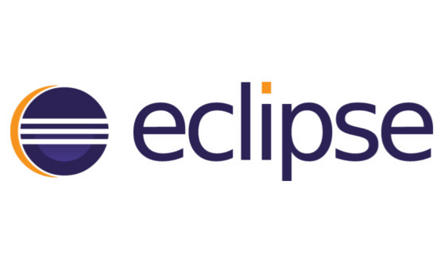
Eclipse
IDE
-
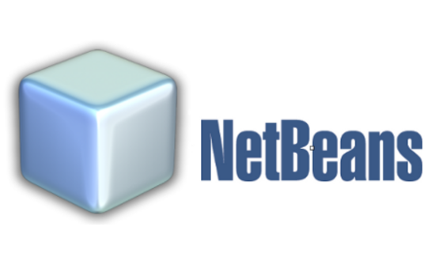
NetBeans
IDE
-
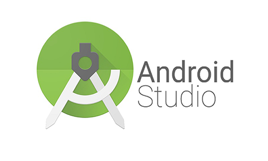
Android Studio
IDE
-
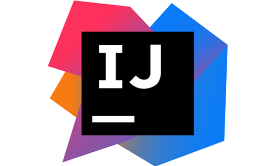
IntelliJ IDEA
IDE
-
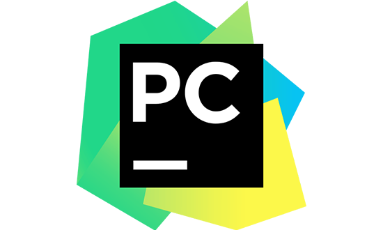
PyCharm
IDE
-
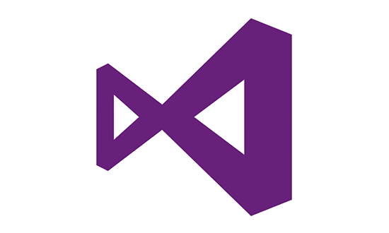
Visual Studio
IDE
-
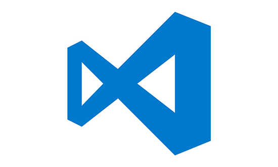
VS Code
Editor
-
Rapid Miner
Plataforma para el análisis y la minería de datos
-
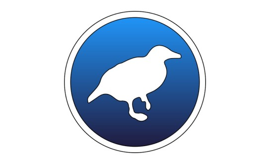
Weka
Plataforma para el aprendizaje automático y la minería de datos
-
Kettle
Herramienta para utilizar técnicas ETL
-
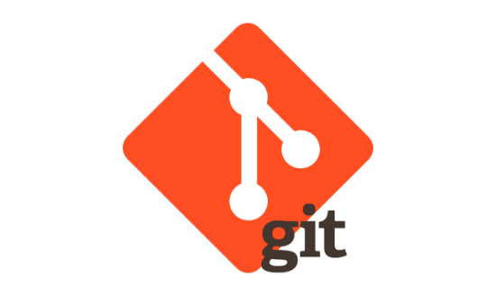
Git
Control de versiones
-
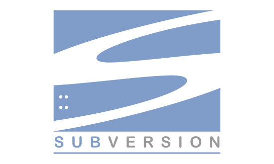
Subversion
Control de versiones
-

GitKraken
Herramienta de control de versiones
-
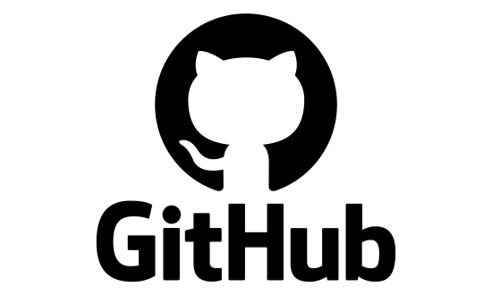
GitHub
Gestor de repositorios
-
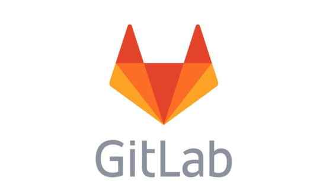
GitLab
Gestor de repositorios
-
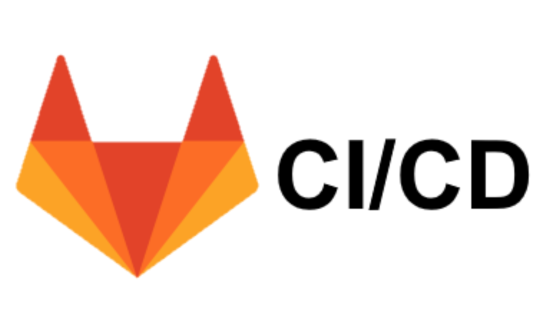
GitLab CI/CD
Herramienta de integración y despliegue continuo
-
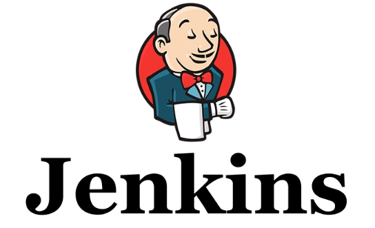
Jenkins
Servidor de integración y despliegue continuo
-
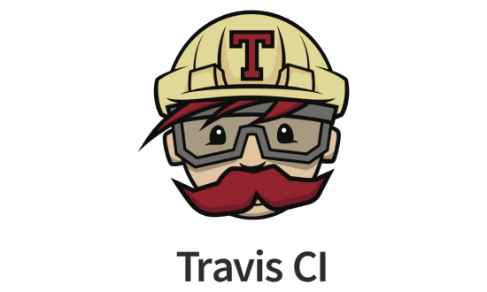
Travis CI
Servicio de integración continua
-
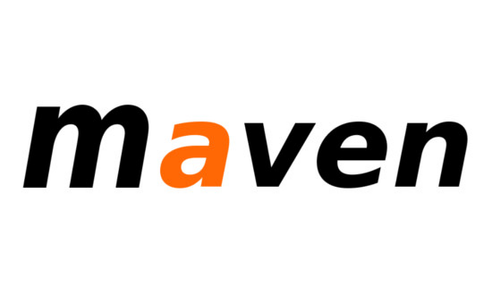
Maven
Construcción de proyectos Java
-
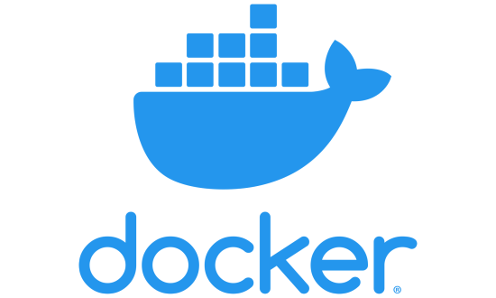
Docker
Automatización de despliegue de aplicaciones
-
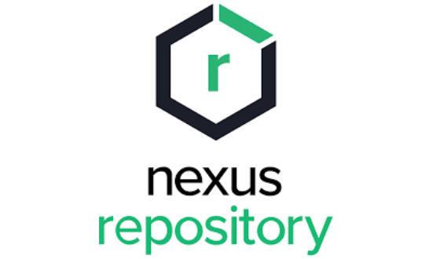
Nexus
Repositorio de librerías de software
-
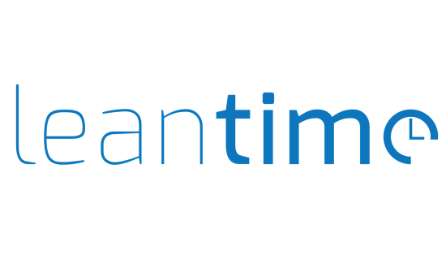
Leantime
Sistema de gestión de proyectos
-
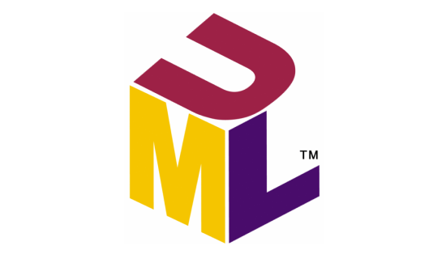
UML
Lenguaje de modelado de sistemas de software